¿Qué es la Corriente Naturalista?
La corriente naturalista es un enfoque de la educación ambiental que promueve el aprendizaje mediante la experiencia directa con la naturaleza.
Busca que las personas comprendan el valor de los ecosistemas mediante la observación, la exploración y el contacto con el medio ambiente.

Características Principales
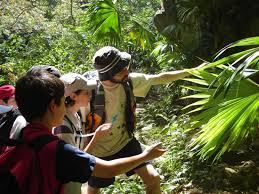
Promueve el aprendizaje al aire libre y el contacto permanente con la naturaleza.
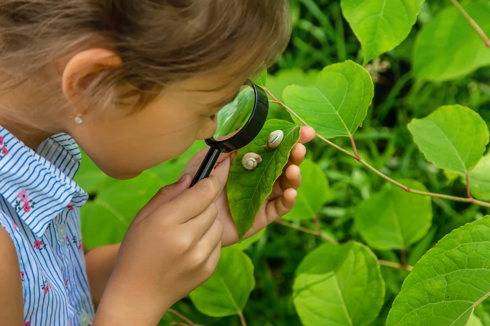
Utiliza la observación, la exploración y la experiencia como herramientas educativas.

Fomenta valores como el respeto, el cuidado y la protección del medio ambiente.
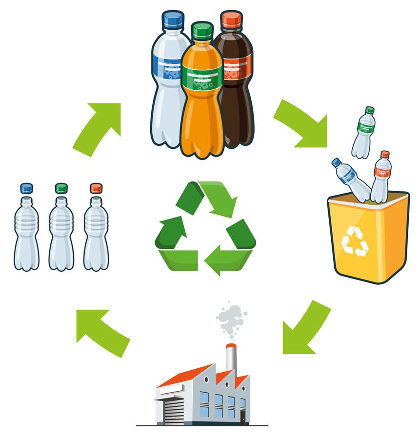
Desarrolla conciencia ecológica y responsabilidad ambiental en las personas.
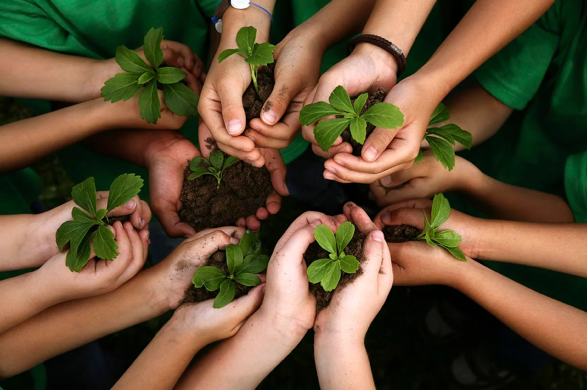
Enfoque de la Corriente Naturalista
- Contacto directo con la naturaleza.
- Observación de plantas, animales y ecosistemas.
- Aprendizaje mediante experiencias al aire libre.
- Respeto y cuidado del medio ambiente.
- Desarrollo de valores ecológicos.

Objetivo
Formar ciudadanos conscientes, responsables y comprometidos con la protección del medio ambiente mediante experiencias educativas que fortalezcan la relación entre el ser humano y la naturaleza.
- Fomentar la conciencia ambiental.
- Promover el respeto por los ecosistemas.
- Desarrollar hábitos sostenibles.
- Fortalecer la conexión con la naturaleza.
- Impulsar la conservación ambiental.
Importancia en la Educación Ambiental
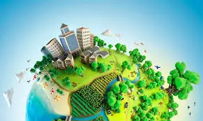
Permite comprender la relación entre las actividades humanas y el equilibrio de los ecosistemas.
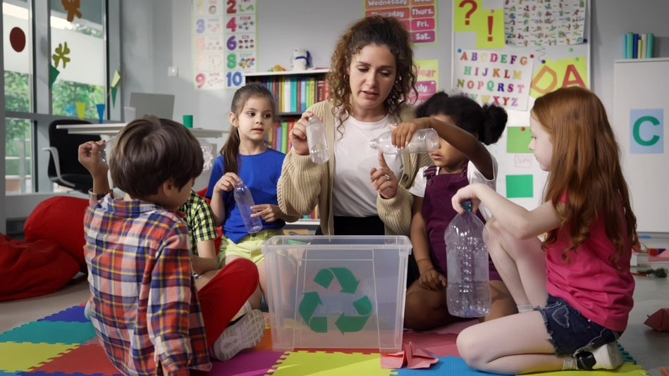
Fortalece la conciencia ambiental desde edades tempranas.
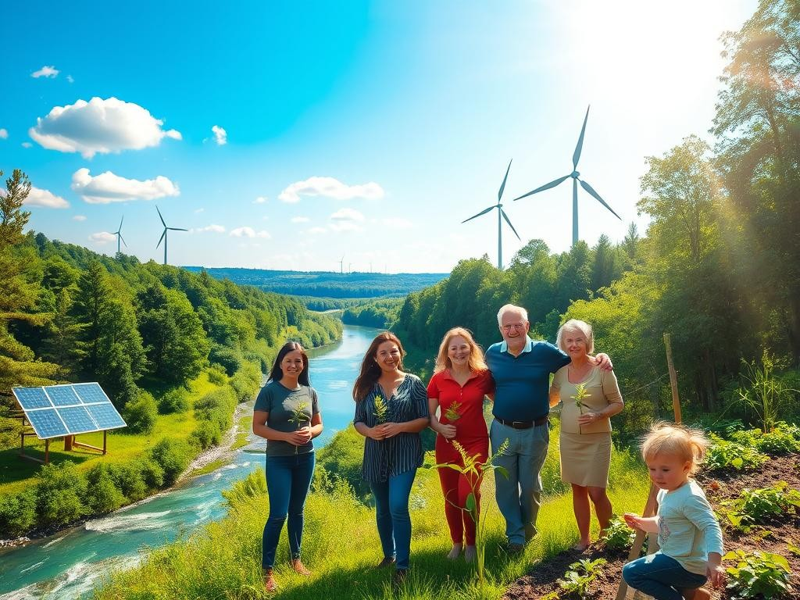
Promueve prácticas responsables para el cuidado de los recursos naturales.

Inspira acciones de conservación y protección del planeta.
Actividades Naturalistas
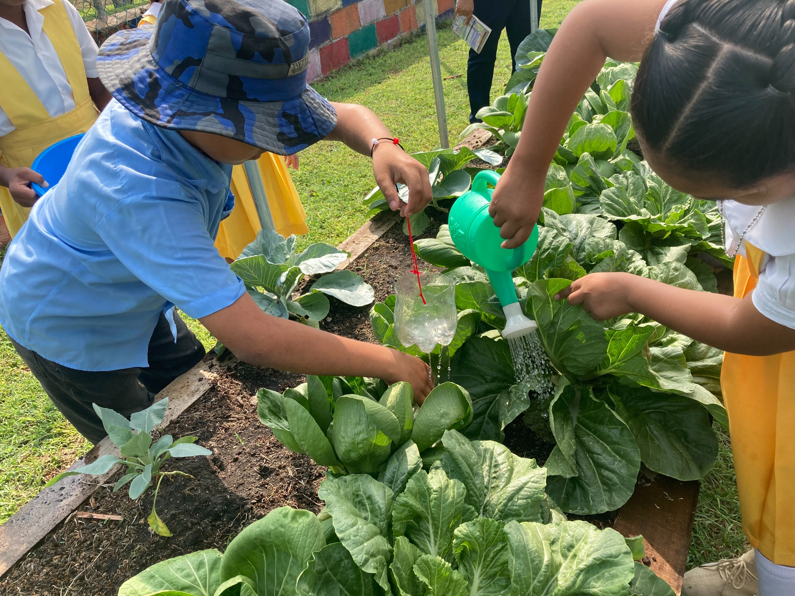
Huertas Escolares
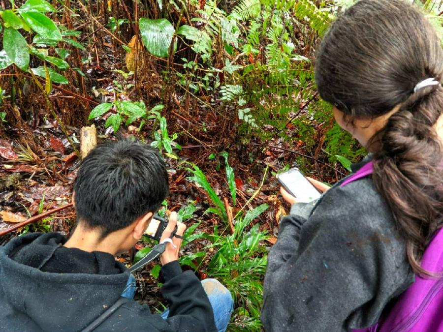
Observación de Flora y Fauna
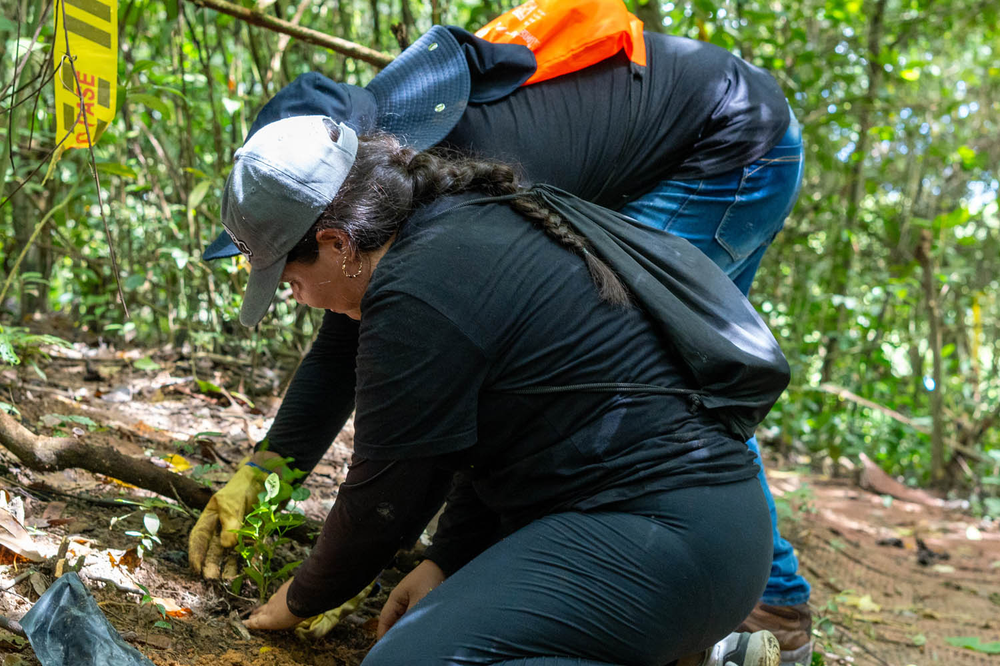
Jornadas de Reforestación
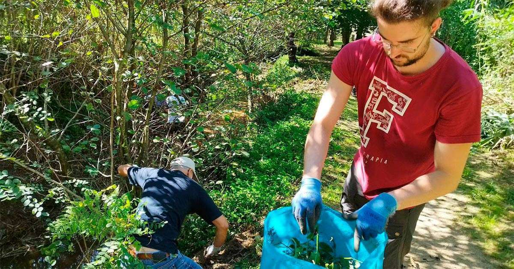
Limpieza de Espacios Naturales
¿Cómo se aplica?
- Clases y recorridos ecológicos al aire libre.
- Visitas a parques naturales y reservas ambientales.
- Proyectos de reciclaje y conservación.
- Actividades de observación y exploración ambiental.
- Campañas de sensibilización ecológica.
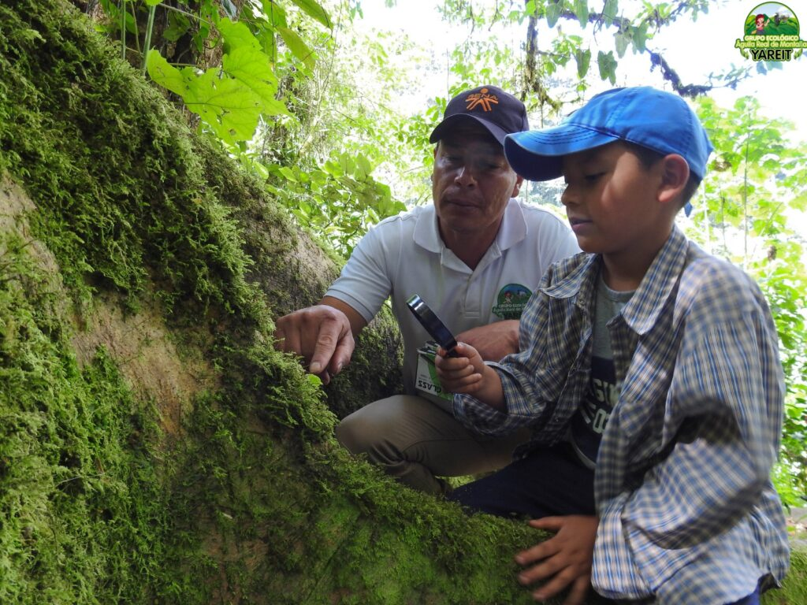